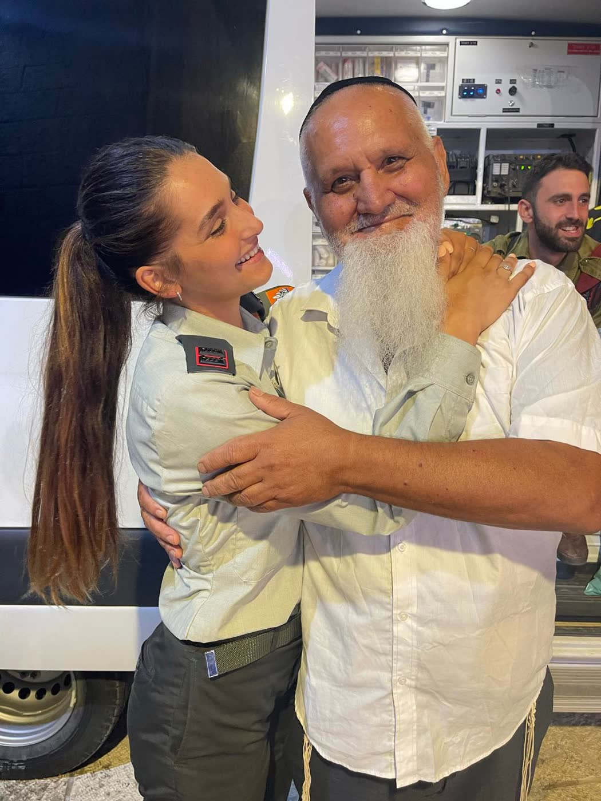

אל תכניסו אותי לאף משבצת
המסע מהמגזר החרדי לקצונה קרבית, יזמות ואליפות העולם. על בחירה, זהות ואומץ.
למי: כל הקהלים, כנסים, אירועי חברה
אל תכניסו אותי לאף משבצת

גדלתי בעולם החרדי, שירתתי כקצינה לוחמת, פיקדתי על לוחמים, והבנתי שהחיים לא נכנסים למשבצת אחת. היום אני מביאה לבמה את החיבור שבין אנשים, חוסן ואומץ לבחור מחדש.
הדרך שלי לא התחילה על במות.

כנערה בסיכון מצאתי את עצמי שואלת שאלות שאין להן תשובות מוכנות מראש. בחרתי לצאת לדרך בלי לדעת לאן.

סיימתי קורס קצינים ופיקדתי על לוחמים ולוחמות מכל קצוות החברה הישראלית.

במהלך השירות נפגעתי בתאונת דרכים קשה. מתוך המגבלה נולדה הבחירה לתקן ולסלוח.
תוך חצי שנה מתחילת האימונים – מקום ראשון באליפות ישראל, וייצוג המדינה באליפות העולם בדרום קוריאה.
ארבעה סיפורים, כל אחד מותאם לקהל שלו.
המסע מהמגזר החרדי לקצונה קרבית, יזמות ואליפות העולם. על בחירה, זהות ואומץ.
סיפור תאונת הדרכים והבחירה בצדק מאחה. על אחריות, סליחה, חוסן והתמודדות עם משבר.
צמצום פערים בחברה הישראלית, חיבור בין עולמות ושיח מעבר לדעות קדומות.
ספורט, התמדה ופריצת גבולות – איך בונים מסוגלות עצמית מאפס.
כל קהל מגיע עם המטען והצרכים שלו. כתבו לי כמה מילים על הארגון, הצוות או הנוער שלכם – ונתאים את ההרצאה בדיוק אליכם.